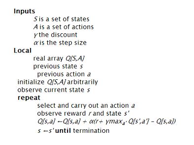
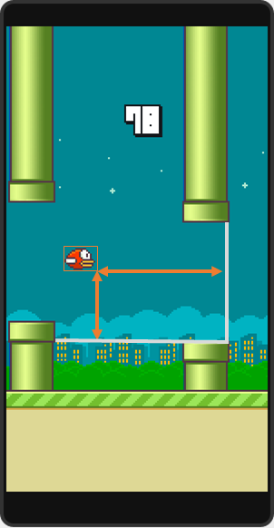

The Hack.
This is a hack for the popular game, Flappy Bird. Although the game is no longer available on Google Play or the App Store, it did not stop folks from creating very good replicas for the web. People have also created some interesting variants of the game - Flappy Bird Typing Tutor and Flappy Math Saga.
After playing the game a few times (read few hours), I saw the opportunity to practice my machine learning skills and try and get Flappy Bird to learn how to play the game by itself. The video above shows the results of a really well trained Flappy Bird that basically keeps dodging pipes forever.
The How.
Initially, I wanted to create this hack for the Android app and I was planning to use Monekyrunner to get screenshots and send click commands. But it takes about 1 - 2 seconds to get a screenshot and that was definitely not fast or responsive enough.
Then I found @mrspeaker's game engine, Omega500 and his version of Flappy Bird for typing practice. I ripped out the typing component and added some javascript Q Learning code to it.
Reinforcement Learning
Here's the basic principle: the agent, Flappy Bird in this case, performs a certain action in a state. It then finds itself in a new state and gets a reward based on that. There are many variants to be used in different situations: Policy Iteration, Value Iteration, Q Learning, etc.
Q Learning
I used Q Learning because it is a model free form of reinformcent learning. That means that I didn't have to model the dynamics of Flappy Bird; how it rises and falls, reacts to clicks and other things of that nature.
Here is a nice, concise description of Q Learning. The following is the algorithm.

State Space
I discretized my space over the folowing parameters.
- Vertical distance from lower pipe
- Horizontal distance from next pair of pipes
- Life: Dead or Living

Actions
For each state, I have two possible actions
- Click
- Do Nothing
Rewards
The reward structure is purely based on the "Life" parameter.
- +1 if Flappy Bird is still alive
- -1000 if Flappy Bird is dead
The Learning Loop
The array Q is initialized with zeros and I always chose the best action, the action that will maximize my expected reward. To break ties I chose "Do Nothing" because that is the more common action.
Step 1: Observe what state Flappy Bird is in and perform the action that maximizes expected reward.
Let the game engine perform its "tick". Now. Flappy Bird is in a next state, s'.
Step 2: Observe new state, s', and the reward associated with it. +1 if the bird is still alive, -1000 otherwise.
Step 3: Update the Q array according to the Q Learning rule.
Q[s,a] ← Q[s,a] + α (r + γ*V(s') - Q[s,a])
The alpha I chose is 0.7 because we have a deterministic state and I wanted it to be pretty hard to un-learn something. Also, the dicount factor, lambda, was 1.
Step 4: Set the current state to s' and start over.
The Next Steps.
- It took about 6-7 hours to train Flappy Bird to be good enough (150 score). This can be improved by instantiating more than 1 bird in the beginning and have all of them contribute their "learnings" to the same Q array.
- Another way to make the learning faster would be to let users provide "good" input. Right now, you can click on the game to make Flappy Bird jump. But, that input is not taken into account by the learner.
- Get this to work on a mobile phone!! If anyone has any ideas , please let me know in the comments :)
Credits.
I'd like to give a shout out to @mrspeaker for creating the Omega500 game engine and making it open source!